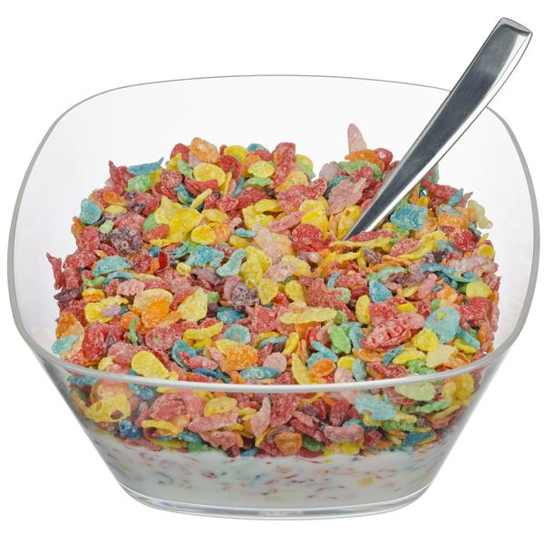

Fruity Pebbles & Milk
A Sweet Delight to Start Your Morning Right
This rice based cereal is a perfect balance of carbs and flavor. If you're gluten free go ahead and try some too!

Ingredients
- 2 Cups Fruity Pebbles Cereal
- 1/2-1 Cup Whole Milk
Directions
- Grab standard bowl out of kitchen cupboard.
- Pour in enough Fruity Pebbles to fill half the bowl.
- Slowly cover with whole milk straight from the container. Be careful to not pour too much as the cereal may get soggy.
- Enjoy slowly for best results.